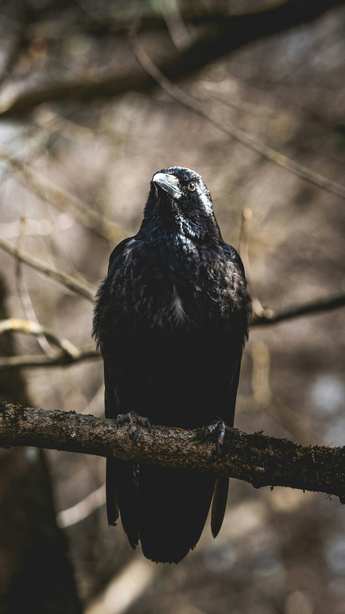
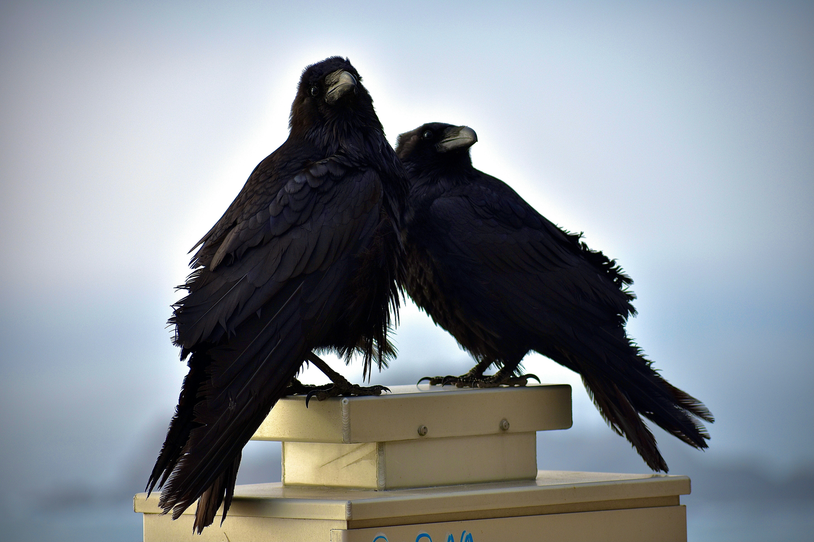
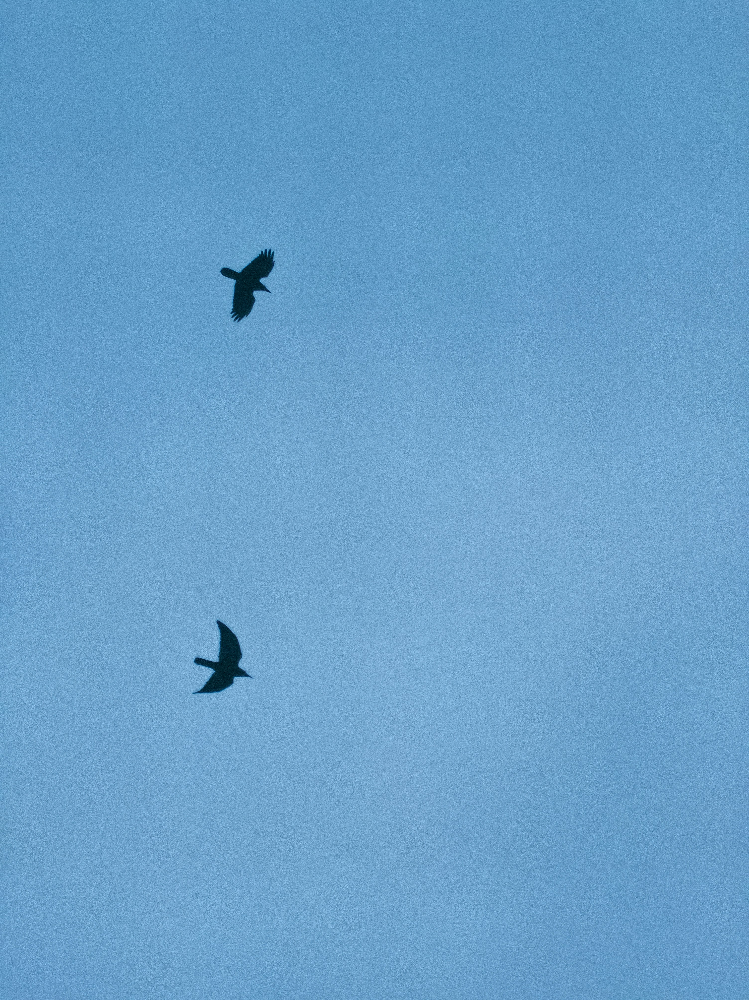
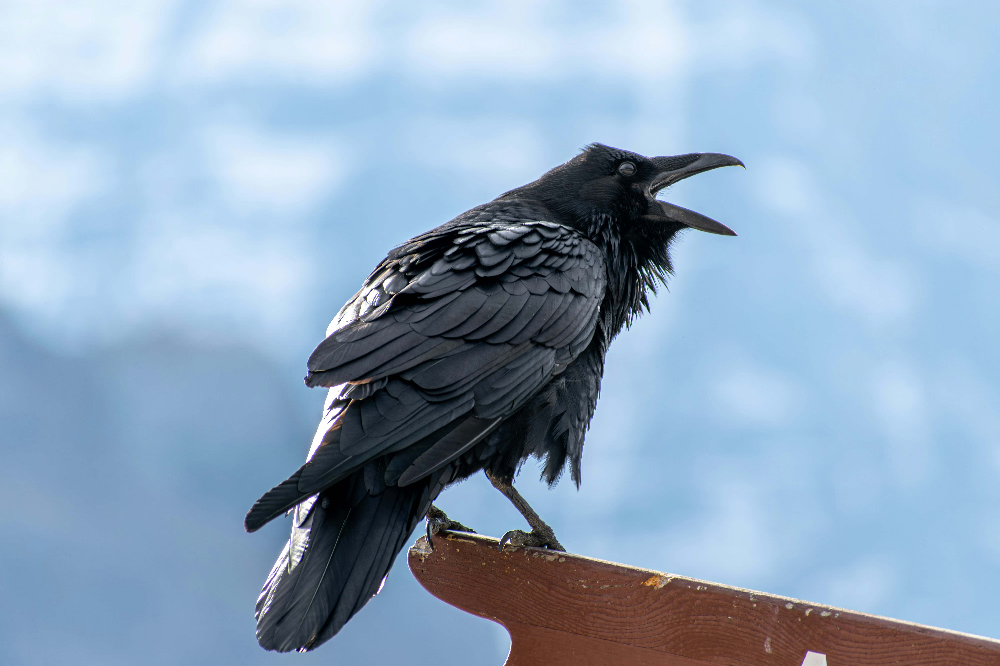

Here are a few pictures of Ravens.

Perched high upon a moss-covered branch, a common raven gazes upward with unmistakable intelligence and sharp focus.

A pair of ravens sit closely together on a modern perch, showcasing their strong social bonds and intense curiosity.

Two ravens soar gracefully through a vast, clear blue sky, demonstrating their incredible aerial agility

With its beak wide open, a raven lets out a powerful call while perched on a wooden signpost.